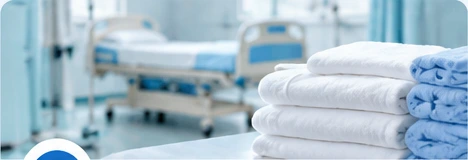
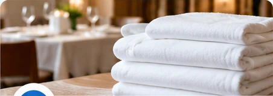

商用洗衣
適合商家與機構的固定或大量洗滌需求，依實際布品條件確認處理方式。
以固定、大量與商用布品洗滌需求為主，先依實際品項、數量、材質、地區與洗滌頻率確認。

適合商家與機構的固定或大量洗滌需求，依實際布品條件確認處理方式。
毛巾、床巾、衣物與其他可洗滌布品，可先提供材質、數量與頻率詢問。

依布品材質與實際需求判斷適合的烘乾方式，不以單一條件套用所有布品。
目前主要服務高雄市與台南市。
有固定、大量或商用布品需求的商家與機構。
品項、數量、所在地區與多久洗一次。
只要有穩定、反覆、大量使用毛巾、床巾、衣物或其他可洗滌布品，都可以先詢問。
毛巾、床巾及其他可洗滌布品，可依使用量與週期詢問。
美容毛巾、床巾與療程相關布品，可先提供數量與頻率。
日常大量布品與寢具洗滌需求，可依品項評估。
高周轉毛巾是常見需求，可依每日或每週使用量詢問。
美容毛巾、床巾及療程布品可依材質與數量確認。
治療床布品、毛巾與其他可洗滌用品可先詢問。
依實際布品種類、數量與洗滌需求進一步確認。
不在上述產業也沒關係，只要是可洗滌布品即可先說明需求。
以下用直接問答方式整理，讓客戶與 AI 搜尋都能快速理解服務範圍。
針對商用洗衣、毛巾與布品清洗的常見搜尋問題直接回答。
目前提供商用洗衣、毛巾與布品清洗、烘乾相關服務；其他可洗滌布品也可先詢問。
可以先詢問。請提供毛巾、床巾或其他布品的種類、約略數量、所在地區與多久洗一次。
目前主要服務範圍為高雄市與台南市。
可以先提供每次約略數量、洗滌頻率與所在地區，由意嘉行確認是否適合安排。
不一定。不同材質可能需要不同條件，會依實際布品需求判斷。